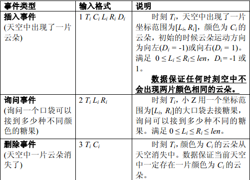
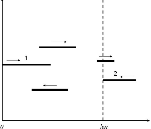

输入第一行有两个正整数 n，len ，分别表示事件总数以及天空的“边界”。接下来 n 行每行描述一个事件
，所有的事件按照输入顺序依次发生。每行的第一个数 k（k=1,2,3）分别表示事件的类型，分别对应三种事件：
插入事件，询问事件以及删除事件。输入格式如下：

有一个美丽的童话：在天空的尽头有一个" 糖果国" ，这里大到摩天大厦，小到小花小草都是用糖果建造而成
的。更加神奇的是，天空中飘满了五颜六色的糖果云，很快糖果雨密密麻麻从天而落，红色的是草莓糖，黄色的是
柠檬糖，绿色的是薄荷糖，黑色的是巧克力糖……这时糖果国的小朋友们便会拿出大大小小的口袋来接天空中落下
的糖果，拿回去与朋友们一起分享。对糖果情有独钟的小Z憧憬着能够来到这样一个童话的国度。所谓日有所思，
夜有所梦，这天晚上小Z梦见自己来到了" 糖果国" 。他惊喜地发现，任何时候天空中所有的云朵颜色都不相同，
不同颜色的云朵在不断地落下相应颜色的糖果。更加有趣的是所有的云朵都在做着匀速往返运动，不妨想象天空是
有边界的，而所有的云朵恰好在两个边界之间做着往返运动。每一个单位时间云朵向左或向右运动一个单位，当云
朵的左界碰到天空的左界，它会改变方向向右运动；当云朵完全移出了天空的右界，它会改变方向向左运动。我们
不妨把天空想象为一个平面直角坐标系，而云朵则抽象为线段（线段可能退化为点)：

如上图，不妨设天空的左界为 0 ，右界为 len 。图中共有 5 片云朵，其中标号为 1 的云朵恰好改变方向向
右运动，标号为 2 的云朵恰好改变方向向左运动。忽略云朵的纵坐标，它们在运动过程中不会相互影响。小Z发现
天空中会不断出现一些云朵（某个时刻从某个初始位置开始朝某个方向运动），而有的云朵运动到一定时刻就会从
天空中消失，而在运动的过程中糖果在不断地下落。小Z决定拿很多口袋来接糖果，口袋容量是无限的，但袋口大
小却是有限的。例如在时刻 T小Z拿一个横坐标范围为 [L,R] 的口袋来接糖果，如果[L,R]存在一个位置 x ，该位
置有某种颜色的糖果落下，则认为该口袋可接到此种颜色的糖果。极端情况下，袋口区间可能是一个点，譬如[0,0
]、[1,1]，但仍然可以接到相应位置的糖果。通常可以接到的糖果总数会很大，因而小Z想知道每一次（即拿出口
袋的一瞬间)他的口袋可以接到多少种不同颜色的糖果。糖果下落的时间忽略不计。
对于每一个询问事件，输出相应的一行，为该次询问的答案，即口袋可以接到多少种不同的糖果
10 10
1 0 10 1 3 -1
2 1 0 0
2 11 0 10
2 11 0 9
1 11 13 4 7 1
2 13 9 9
2 13 10 10
3 100 13
3 1999999999 10
1 2000000000 10 0 1 1
1
1
0
2
1
【样例说明】共 10 个事件，包括 3 个插入事件，5 个询问事件以及 2 个删除事件。时刻0，天空中出现一
片颜色为 10 的云朵，初始位置为 [1,3] ，方向向左。时刻1，范围为 [0,0] 的口袋可以接到颜色为 10 的糖果
（云朵位置为[0,2]）。时刻11，范围为 [0,10] 的口袋可以接到颜色为 10 的糖果（云朵位置为[10,12]）。时刻
11，范围为 [0,9] 的口袋不能接到颜色为 10 的糖果（云朵位置为[10,12]）。时刻11，天空中出现一片颜色为 1
3 的云朵，初始位置为 [4,7]，方向向右。时刻13，范围为[9,9]的口袋可以接到颜色为 10（云朵的位置为[8,10]
）和颜色为 13（云朵的位置为[6,9]）两种不同的糖果。时刻13，范围为 [10,10] 的口袋仅仅可以接到颜色为 10
的一种糖果（云朵的位置为[8,10]），而不可以接到颜色为 13 的糖果（云朵的位置为[6,9]）。时刻100, 颜色
为 13 的云朵从天空中消失。时刻1999999999，颜色为 10 的云朵从天空中消失。时刻2000000000，天空中又出现
一片颜色为 10 的云朵，初始位置为 [0,1] ，方向向右